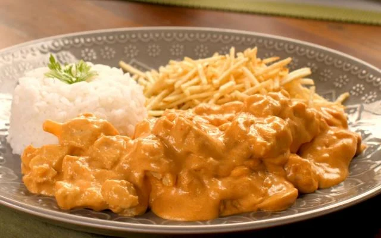
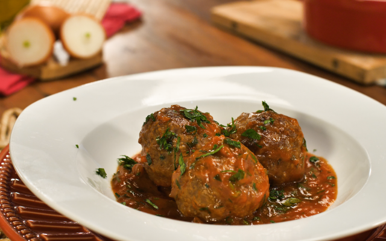

strogonoff de frango
Ingredientes para 10 Porções
- 3 peitos de frango cortados em cubos
- sal a gosto
- 1 cebola picada
- 1 colher de manteiga
- 1/3 copo de mostarda
- 1 copo de creme de leite
- 1 dente de alho picado
- pimenta-do-reino a gosto
- 2 colheres (sopa) de maionese
- 1/2 copo de ketchup
- batata palha a gosto
Modo de Preparo
- Em uma panela, misture o frango, o alho, a maionese, o sal e a pimenta.
- Em uma frigideira grande, derreta a manteiga e doure a cebola.
- Junte o frango temperado até que esteja dourado.
- Adicione o ketchup e a mostarda.
- Incorpore o creme de leite e retire do fogo antes de ferver.
- Sirva com arroz branco e batata palha.

Almôndegas
Ingredientes para 4 Porções
- 500 g de carne moída
- 1 xícara de cebola bem picada (60 g)
- 150 g de farinha de rosca
- pimenta-do-reino a gosto
- 2 colheres (sopa) de azeite de oliva (30 ml)
- 1 ovo
- sal a gosto
- 395 g de molho de tomate
Modo de Preparo
- Misture a carne com o ovo, a cebola, o sal, um pouco de azeite de oliva (ou óleo) e a pimenta.
- Agregue a farinha até dar o ponto de enrolar as almôndegas.
- Faça pequenas bolinhas.
- Em uma panela com um pouco de azeite, frite as almôndegas selando-as em fogo alto.
- Retire as almôndegas e reserve.
- Em outra panela, esquente o molho de tomate em fogo baixo.
- Na mesma panela da almôndega, elimine o excesso de azeite e coloque o molho de tomate, colocando as almôndegas para cozinhar por alguns minutos.
- Em cerca de 15 minutos as almôndegas estarão totalmente cozidas e o prato estará pronto.
-

Massa de panqueca fácil
Ingredientes para 20 Porções
- 1 xícara de leite
- 1 pitada sal
- 1 e 1/2 xícaras de farinha trigo
- 1 colher de sopa de óleo
- 2 ovos
Modo de Preparo
- Bater tudo no liquidificador, coloque primeiro os líquidos.
- Aquecer a frigideira, pingar um pouco de óleo.
- Distribuir a massa uniformemente.
- Aguarde desgrudar da panela e vire-a.
- Recheie com carne-moída, frango desfiado, legumes, doces.